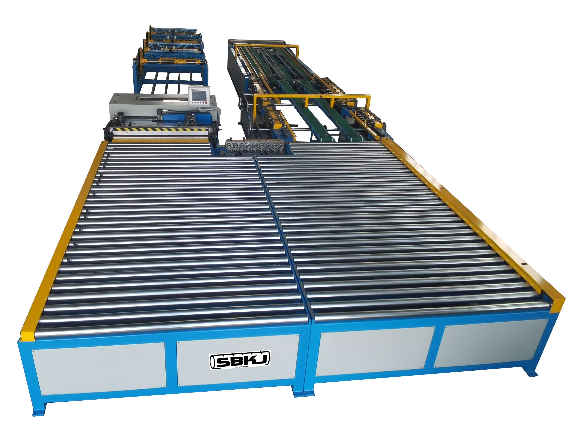
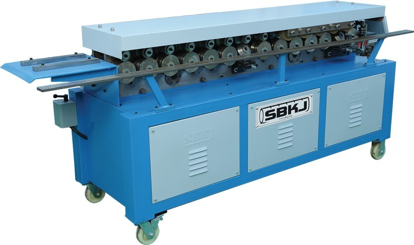
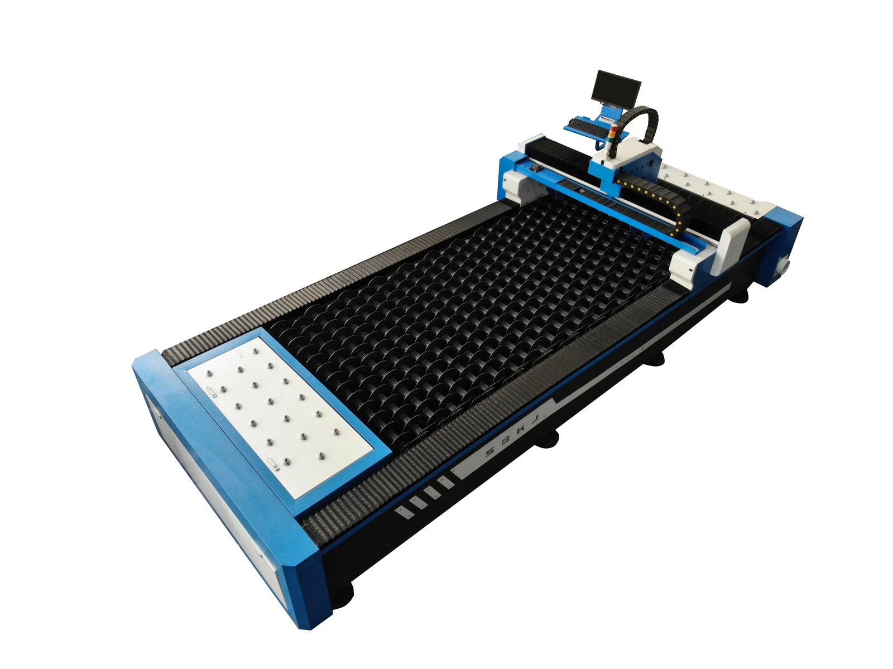
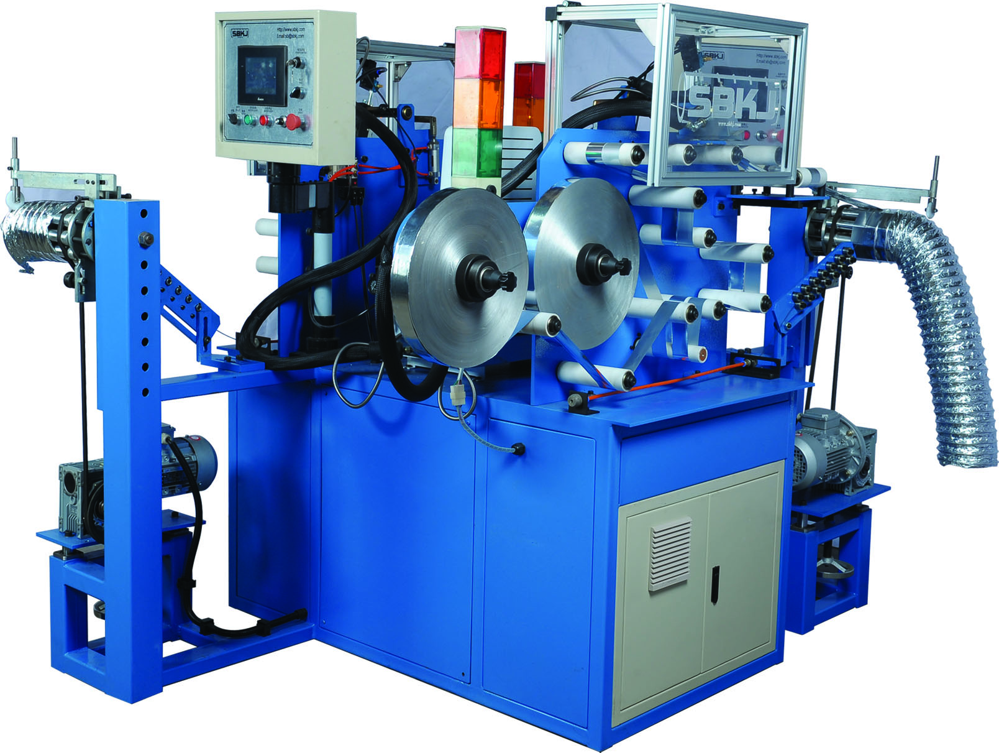
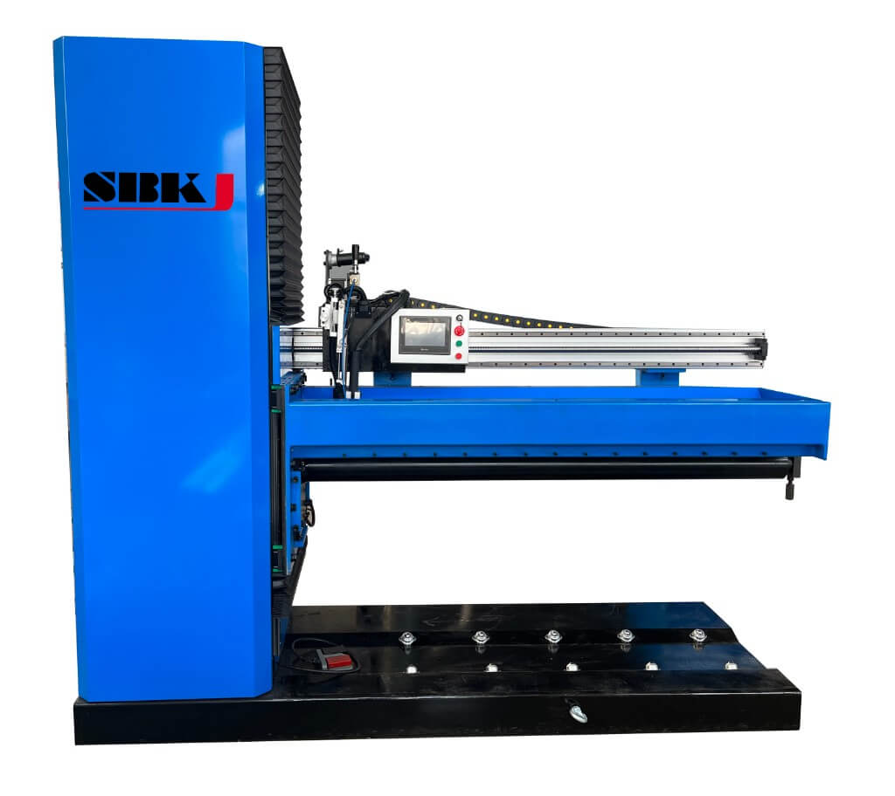

Product catalog
HVAC Duct Machinery by Category
Six categories covering the full Taokron ductwork machinery portfolio. Each category page has specifications, a buyer’s guide, standards coverage and FAQ.
Why category pages?
Most HVAC contractors shop for a category before they shop for a specific model — you know you need an auto duct line before you decide between SBAL-V and SBAL-III. These category pages group the Taokron portfolio by application so you can see the full range side-by-side, compare the flagship models against each other, read the buyer’s guide for that category and only then drill into the individual product pages. Every category page is written by Taokron Engineering & QA and reviewed on the date shown at the bottom of the page.
What each category page contains
Each of the six category pages follows the same structure so you can move between them quickly without relearning the layout. You get a 250-word overview introducing the application and the buyer profile, a grid of every machine in the category with thumbnails and a one-line hook each, a specifications-at-a-glance comparison table that puts the flagship models side by side on the parameters that actually matter (output, thickness range, control system, power), a How to choose mini-guide written by Taokron engineers walking you through the decision process, a standards-and-compliance section naming the specific SMACNA / EN / AS/NZS / GB standards each category aligns with, a 4-question FAQ covering the questions we get asked most often on live quotations, and finally a related-categories block so you can jump to the next likely category without going back to this hub.
How to use this hub
Start with the category that best matches your application, not the machine you currently use. If you make rectangular duct from coil, start with Auto Duct Production Lines. If you make round duct, start with Spiral Duct Machinery. If you already have a forming line and need to add TDF or Pittsburgh closure, jump directly to TDF & Lockformer. If you are building the shop from scratch, start with Cutting & Forming to see how raw coil gets prepared before it reaches any of the forming machines. Flexible Duct Machinery is its own world — it does not overlap with the rigid-duct categories. Duct Welding Machines apply to stainless, pressure-rated, or round-flanged duct shops and are typically added alongside one of the other categories rather than replacing it. When in doubt, send us the project specification and we will tell you which category to read first.
Browse by category
Click into any category for specs, buyer’s guide and FAQ.

Auto Duct Production Lines
U-shape rectangular duct fabrication lines: SBAL-V (18 m/min, 40 kW, 0.5–1.5 mm), SBAL-III (18 m/min, 10.7 kW, 0.5–2.0 mm), SBAL-II (18 m/min, 9.2 kW). Coil in, finished duct out.

Spiral Duct Machinery
Spiral tubeformers from Φ80 to Φ2500 mm, plus ovalizers, flanging machines and gore-lockers for round and flat-oval duct.

TDF Flange, Lockformer and Seam Machines
Standalone machines for TDF flange forming, Pittsburgh lock seams, cleat closure, round flanges and duct zipper seam closing.

Cutting, Bending and Forming Machines
Plasma and laser cutters, sheet shears, slitting machines, folding machines, riveting machines and auxiliary forming equipment.

Flexible Duct Machinery
Aluminum flexible duct forming (SBLR series), insulation, shrinking, canvas duct forming and flex connector machines.

Duct Welding Machines
Stitch welders, seam welders, spot welders, auto angle-iron welders, elbow welders, laser welders and medium-frequency welders for HVAC duct shops.
Decision matrix
Match Your Workshop to a Category in 60 Seconds
Use this short matrix as a sanity check before you click into a category page. If two rows match your workshop, read both — most Taokron customers run two complementary categories side by side.
| If your workshop… | Start with this category | Then add |
|---|---|---|
| Makes rectangular HVAC duct from coil | Auto Duct Production Lines | TDF & Lockformer |
| Makes round HVAC duct from coil | Spiral Duct Machinery | Cutting & Forming |
| Already has a forming line, needs flange & seam | TDF & Lockformer | Cutting & Forming |
| Building a new shop from scratch | Cutting & Forming | Auto Duct Lines + Spiral |
| Specialises in flexible / aluminium duct | Flexible Duct Machinery | — |
| Fabricates stainless or pressure‑rated duct | Duct Welding Machines | Spiral or Auto Duct Lines |
Common questions
Frequently Asked at the Catalogue Level
Higher‑level questions buyers ask before they pick a category. Detailed product‑level questions are answered on each individual category page.
Do I need machines from more than one category?
Almost always, yes. A typical Taokron customer runs an Auto Duct Production Line for rectangular work and a Spiral Duct Machine for round work, plus a TDF & Lockformer for closure and one or two Cutting & Forming machines for fittings. The category structure on this hub mirrors the way Taokron workshops are actually laid out.
Can Taokron supply a turnkey workshop?
Yes. Taokron has commissioned hundreds of turnkey duct factories worldwide, ranging from 200 m²/day single‑line workshops to multi‑line cells producing 1,200 m²+ per shift. We design the layout, supply every machine, train operators and supervise installation. Send your project brief through the contact page to start the conversation.
Are the categories priced separately?
Yes. Each category page links to the individual product pages, and Taokron quotes per machine. Customers buying multiple machines from one or more categories typically get an integration package that includes shared electrical panels, common spare parts kits and a single commissioning visit.
Which standards do the categories support?
All Taokron machinery is configurable for SMACNA, EN 1505/1506, AS/NZS 4254, DW/144 and other international standards. Tell us the standard on your enquiry and we configure the tooling, PLC recipes and seam types accordingly. Each category page lists the specific standards its machines are most often used for.
How are these category pages kept up to date?
Every category page is reviewed by Taokron Engineering & QA at least every 90 days, and immediately after any product release or specification change. The reviewer name and date appear at the bottom of each category page so you can verify how current the technical content is.
What if my application is not on this hub?
Taokron also supplies specialised machinery for niche applications — marine HVAC, mine ventilation, semiconductor process exhaust and others — that do not fit neatly into the six core categories. Send us your project specification and we will recommend the right machine even if it is not catalogued on this site.
Not sure which category fits?
Send us your project brief — Taokron engineers recommend the right machine family within 12 hours.
Get a quotation in 12 hoursShort-listing Taokron against other HVAC duct machinery vendors? The why choose Taokron page sets out the ten reasons buyers pick Taokron — and the three scenarios where Taokron is not the right fit.
Page reviewed by Taokron Engineering & QA · Last verified